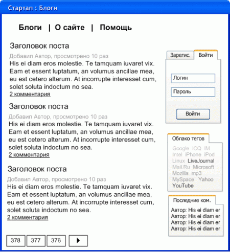
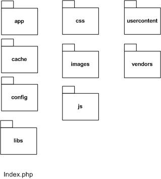

Итак, вы воодушевлены идеей стартапа Веб 2.0. Вы полагаете, что придумали что-то оригинальное и свежее. Вам видится эффектная реализация вашей идеи. Вы верите, что ваш проект произведет революцию на рынке. Если именно такие мысли занимают вас, самое время заняться бизнес-планом. Планирование бизнеса – это отдельная дисциплина и об этом можно найти множество литературы. Впрочем, если вы не имеете опыта составления бизнес-планов, лучше прибегнуть к помощи профессионалов. Чем хуже спрогнозирован бизнес, тем выше риски его краха.
Однако допустим, что вы располагаете привлекательным бизнес-планом, вы ожидаете самоокупаемость проекта уже через 2 года от момента его старта, и предвкушаете ежегодный 50% рост его рекламного потенциала. В MS-Visio подготовлены многообещающие схемы пользовательского интерфейса проекта. И даже более того, ваш дизайнер, вооружившись модным руководством, в рекордные сроки обозначил графический вид проекта. Так, что сверстанные в лучших традициях безтабличной верстки типовые страницы пользовательского интерфейса дожидаются своего звездного часа в вашей локальной папке проекта.
Я не могу знать, в чем суть вашего стартапа, в чем его особенность. Но для того чтобы отталкиваться от какого-либо практического примера, давайте рассмотрим упрощенный вариант всеми любимого коллективного блога habrahabr.ru. Очевидно, что едва ли вы планируете повторить известный проект. Вы можете пойти по проверенному пути и разработать фотоблог в стиле flicr.com, социальную сеть a-la facebook.com, социальные закладки на манер ma.gnolia.com или социальные новости в традициях digg.com. Возможно, вы выберите собственную извилистую тропу на пути к коммерческому успеху. В любом случае вы столкнетесь с общими для проектов Веб 2.0 подходами, такие как комментирование, рейтингование, тегирование, всплывающие контекстные подсказки (tooltips) и т.д. А что касается ленты статей или, скажем, пользовательской панели – эти решения справедливы фактически для любого проекта.

Итак, в нашем примере имеется всего несколько информационных страниц («О сайте», «Помощь»), лента статей, пользовательская панель («Регистрация», «Авторизация»), облако тегов, связанное с лентой статей и лента последних комментариев.
Предположим, нам хотелось бы, чтобы итерации с формами (регистрация, авторизация, добавление комментария) по возможности не требовали перегрузки веб-страницы. Системные сообщения появлялись в заданном оформлении и поддерживали принцип «перетянул и оставил» (Drag&Drop). При выполнении процессов система должна сообщать о том, чем и как долго она занята.
Полагаю, теперь задача ясна, осталось подумать о ее реализации.
Просто взять и начать программировать – идея не самая лучшая. Нужны гарантии того, что на определенном этапе не придется начинать все с начала, что растущая посещаемость не будет проблемой, что «бесконечная бета» не превратиться в «бесконечную альфу» и что запросы пользователей о новых виджетах или необходимость «отрытого API» не станут для вас камнем преткновения. Хорошо бы положиться на чужой опыт, на проверенный подход. Решением здесь может быть использования одного из популярных фреймворков: Zend Framework, Prado, CakePHP, Symphony Project, Seagull Framework, WACT, PHP on TRAX, ZooP Framework, eZ Components или же CodeIgniter.
Каждый из них имеет свои сильные стороны. К примеру, производительность Zend Framework - вполне закономерное преимущество для решения от разработчиков PHP. Prado – отличает похожая на XAML модель декларирования пользовательских интерфейсов. Судя по всему, наибольшей гибкостью и масштабируемостью славится CakePHP. Впрочем, у всех фреймворков есть общие свойства. Все Фреймворки позволяют использовать различные СУБД, не требуя при этом изменения кода. Все из них поддерживают PHP5 (но не все при этом способны работать на PHP4). Во всех из их содержатся компоненты валидации данных. И почти все построены по модели MVC (Модель-Вид-Контроллер). Если у вас уже есть опыт работы с одним из этих Фреймворков, я не стану удерживать вас от использования любимой платформы. Однако если вы сейчас рассматриваете этот список, не зная с чего начинать, я спешу напомнить вам, что любое универсальное решение (а все эти фреймворки достаточно универсальны), не может сравниться в производительности с хорошо исполненным частным решением, предназначенным для решения только одной данной задачи. Что же, давайте попробуем создать собственною программную платформу для решения задач нашего стартапа. Итак, находим хостинг-план с PHP 5.2 и MySQL 4/5. Не забудьте удостовериться в том, что этот план, включает и расширение PHP PDO (PHP Data Objects). Использование этой библиотеки абстрактного доступа к БД позволит при необходимости легко переключиться на другую СУБД.
Теперь самое время определиться с компонентной моделью (с принципом размещения скриптов проекта). При удачной компонентной модели вы всегда быстро найдете требуемые скрипты, вам будет легко ориентироваться в системе в ходе отладки, у вас не будет проблем с развитием проекта.
Итак, в корневой папке проекта будет расположен index.php, который должен принимать все запросы проекта, подключать требуемые библиотеки и передавать управление соответствующим скриптам. Папка app будет содержать скрипты, обеспечивающие работоспособность различных веб-страниц проекта. Скрипты будут распределены по папкам controllers, models, views. Это та самая модель MVC. Для любой веб-страницы система найдет соответствующий скрипт модели и примет в нем все необходимые для данного интерфейса данные. Затем будет вызван соответствующий веб-странице скрипт вида, который оформит эти данные для вывода. Если веб-странице были переданы данные в POST или GET, прежде скриптов модели и вида, будет вызван скрипт контроллера, который произведет с потупившими данными требуемые действия. Помимо папок MVC, я предлагаю также завести папку ajax_controllers, где будут расположены контроллеры для асинхронных Java Script запросов (AJAX).

Возвращаемся в корневую папку и создаем классический набор папок для оформления проекта и скриптов JS (css/images/js). Создаем паку config, где будет храниться файл config.inc.php. В нем мы определим интерфейс и данные для доступа к БД, константы проекта HTTP_PATH и ROOT_PATH, константы с именами таблиц БД и прочие конфигурационные данные. Папка libs, будет содержать программные библиотеки. Загруженные пользователями файлы будут направлены в папку usercontent. В папке vendors будут помещены сторонние библиотеки и решения, такие как FCKEditor, LastRSS, MediaPlayers, YUI.
Как эта схема работает на практике? Давайте рассмотрим пример. Пользователь запросил веб-страницу http://нашсайт/blog/.
Находящийся в корневой папке файл .htaccess перенаправил запрос в index.php
DirectoryIndex index.php
ErrorDocument 404 /404/
Options +Followsymlinks
RewriteEngine on
RewriteCond %{REQUEST_FILENAME} !-f
RewriteCond %{REQUEST_FILENAME} !-d
RewriteRule ^(.*)$ index.php?%{QUERY_STRING} [L]
Index.php считывает конфигурацию из config.php, включает небольшой набор общеупотребительных функций, таких как отладочная функция toLog(). Далее включается набор паттернов (patterns.inc.php) и производится инициализация среды (init.inc.php). В простейшем случае в ходе инициализации анализируется строка запроса $_SERVER['REQUEST_URI'] и исходя из ее содержания назначаются переменные $CTRLPATH, $RECORD_ID и $APPPATH. Каким образом? В случае запроса http://нашсайт/controller/адрес - $CTRLPATH принимает значение «адрес». В случае запроса http://нашсайт/адрес/000023/ (маска регулярного выражения /\d{7}/) - $RECORD_ID принимает значение 23. $APPPATH –всегда принимает значение «адрес».
app/patterns.inc.php
Далее система устанавливает соединение с БД и проверяет, не авторизован ли пользователь. Так как была запрошена веб-страница, а не запись списка будут последовательно опрошены
app/views/blog/index.inc.php
Возможно вы обратили внимание на вызов класса get для получения списка статей. Благодаря паттерну factory, мы можем загружать в память только те библиотеки, которые мы используем в актуальных задачах. Но предлагаю пойти дальше и спроектировать библиотеки таким образом, чтобы для наиболее часто запрашиваемых веб-страниц мы ограничились минимальным расходом памяти. Давайте поместим все методы запросов данных, которые будут востребованы в каждом интерфейсе в класс get. Прочие методы можно распределить по классам в соответствии с логикой нашего проекта. Они будут получены фабрикой лишь по мере необходимости. Например, когда требуется сохранить содержание пользовательского комментария.
Как видно из скрипта вида в данном случае будет отображена страница, содержащая список статей в левой колонке. В правой колонке ожидаются пользовательская панель, облако тегов, последние комментарии. В скрипте вида пока мы можем видеть только контейнеры этих панелей. Однако вызовы функции showBlock примут и вставят в эти контейнеры содержание панелей.
Итак, мы получили список статей. Теперь требуется рассмотреть случай запроса пользователем отдельной статьи из этого списка. В этом случае в ходе инициализации среды будет определена переменная $RECORD_ID. Система опросит универсальную модель для любой из записей списка blog. Модель будет найдена по адресу app/models/blog/record.inc.php. $RECORD_ID послужит параметром для запроса данных статьи.
$get->article($RECORD_ID);
Скрипт вида система будет искать по адресу app/views/blog/record.inc.php.
По аналогии с веб-страницей списка статей, когда пользователь запросит информационную страницу (например, http://нашсайт/about/) в скрипте модели будут получены данные страницы (app/models/about/index.inc.php), в скрипте вида (app/views/about/index.inc.php) будет задано оформление.
По условиям задачи система должна при необходимости показывать сообщения в стилизированных перемещаемых окнах, сообщать о состоянии процессов. Наиболее простой путь – использовать компонент panel из библиотеки пользовательских интерфейсов от Yahoo (http://developer.yahoo.com/yui/container…). Однако если вы желаете избавить пользователей вашего проекта от необходимости ожидания загрузки дополнительного JS-скрипта размером порядка 100Кб, можно попробовать сделать собственную библиотеку. Для системных сообщений вам потребуются две функции showSystemMessage() и hideSystemMessage(). Первая будет показывать скрытый слой окна сообщения ( document.getElementById ("window_id").style.display="block" ) и помещать туда переданное в функцию сообщение ( document.getElementById("window_content_is").innerHTML = message ). Вторая функция будет скрывать сообщение ( document.getElementById ("window_id").style.display="none" ). Желательно также перед показом слоя программно позиционировать его в центре окна браузера.
Отлично, теперь мы можем показывать окно системного сообщения и скрывать его. Но как включить для него Drag&Drop? Достаточно просто указать в слое окна диспетчеры событий для операций с мышью:
..
и добавить в JS-скрипты проекта обработку этих событий.
// Быстрый доступ к объекту
function $(divName) { return document.getElementById(divName); }
// Определяем тип браузера
if(document.implementation && document.implementation.createDocument) var isMozilla=true;
else var isMozilla=false;
// Захватить объект для перемещения и его координаты
function windowMouseDown(divNamePref, ev) {
if (isMozilla) { event=ev; }
currentWindowDivNamePref = divNamePref;
// Save offset
currentWindow[divNamePref] = {
"x" : event.clientX + document.body.scrollLeft - $(divNamePref).style.left.replace("px",""),
"y" : event.clientY + document.body.scrollTop - $(divNamePref).style.top.replace("px","")
};
}
// Двигать объект
function windowMouseMove(ev) {
if(!currentWindowDivNamePref) return false;
if(!currentWindow[currentWindowDivNamePref]) return false;
if (isMozilla) { event=ev; }
$(currentWindowDivNamePref).style.left = (event.clientX + document.body.scrollLeft - currentWindow[currentWindowDivNamePref].x) + "px";
$(currentWindowDivNamePref).style.top = (event.clientY + document.body.scrollTop - currentWindow[currentWindowDivNamePref].y) + "px";
return false;
}
// Отпустить объект
function windowMouseUp(divNamePref) { currentWindow[divNamePref] = null; currentWindowDivNamePref = false; }
if (isMozilla) { document.captureEvents(Event.MOUSEMOVE); }
document.onmousemove = windowMouseMove;
В случае окна состояния процесса ниже слоя окна добавляется еще полупрозрачный слой, залитый серым цветом и закрывающий собой содержание всего окна браузера. Таким образом мы получаем эффект временного «замораживания» пользовательского интерфейса. В сообщении окна можно добавить динамичное изображение, визуализирующее процесс. Как правило, в коде слоя окна системного сообщения размещается кнопка «Закрыть». В случае окна состояния процесса этого не требуется.
Теперь рассмотрим практическую задачу, которая потребует, описанных функций управления системными окнами. Нам необходимо реализовать в проекте пользовательскую панель. Это компонент, позволяющий посетителям проекта либо зарегистрироваться, либо авторизоваться. Т.е. когда пользователь заполнил форму для регистрации, система должна отправить его данные на сервер, проанализировать их и либо сообщить об ошибке заполнения (скажем, если был введен некорректно код подтверждения Captcha), либо зарегистрировать пользователя и, опять же, сообщить о результате. Сообщить о чем-либо мы теперь можем с помощью окна системного сообщения. Как вы, должно быть, помните уже, для того чтобы система просто отображала пользовательскую панель нам потребуется JS-запрос на сервер (функция showBlock()). Для того, чтобы проверить введенные пользователем данные не перегружая веб-страницу опять же не обойтись без AJAX. Таким образом, нам нужен набор JS-функций для отправки асинхронных запросов в контроллер на сервере и получения ответов контроллера. В данном случае опять же можно использовать собственное решение, а можно положиться на опыт популярных open source библиотек. Давайте рассмотрим вариант использования компонента Connection Manager из YUI (http://developer.yahoo.com/yui/connectio…). Для его использования придется вызывать в коде страниц проекта два скрипта yahoo-min.js и connection-min.js.
Давайте посмотрим, каким образом работает функция showBlock, отображающая вспомогательные компоненты веб-страницы.
// Функции AJAX
// Быстрый доступ к объекту
function $(divName) { return document.getElementById(divName); }
// Послать запрос контроллеру
function showBlock(BlockID) {
YAHOO.util.Connect.asyncRequest('POST', "http://нашсайт/controller/"+ BlockID.toLowerCase() +"/", callback, "ctrl_action=getComponent");
}
// Определить поведение системы при получении ответа
var callback =
{
success:CtrlRespond,
failure:commonHandleFailure,
argument:['foo','bar']
};
// Неудачный ответ
var commonHandleFailure = function(o){
if(o.responseText !== undefined){
showSystemMessage("Connection Error");
}
};
// Анализ ответа контроллера
var CtrlRespond = function(obj){
if(obj.responseText == undefined) return false;
if(obj.responseText.substr(0,1)=="{") {
var respondStructure = eval( '(' + obj.responseText + ')' );
// Контроллер просит показать ошибку
if( respondStructure.ErrorMsg ) return showSystemMessage(“ОШИБКА:” + respondStructure.ErrorMsg);
// Контроллер просит выполнить соответствующее коду действие
if( respondStructure.ActionCode==1 ) { $( respondStructure.ID ).innerHTML= respondStructure.Body; return true; }
// Контроллер просит показать сообщение
if( respondStructure.Body ) showSystemMessage(respondStructure.Body);
} else alert(obj.responseText); // Отладка в случае ответа
// с некорректной для JSON структурой
};
libs/controller.lib.php